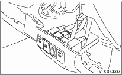
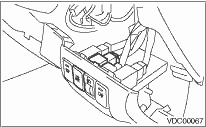

1. Disconnect the ground cable from the battery.

2. Remove the instrument panel lower cover. 
3. Push to the outside, and remove the VDC OFF switch.

VEHICLE DYNAMICS CONTROL (VDC) > VDC OFF Switch
1. Disconnect the ground cable from the battery.
2. Remove the instrument panel lower cover.
3. Push to the outside, and remove the VDC OFF switch.
